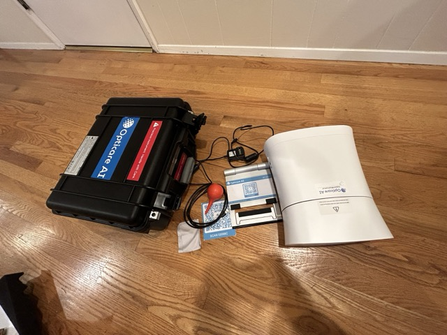
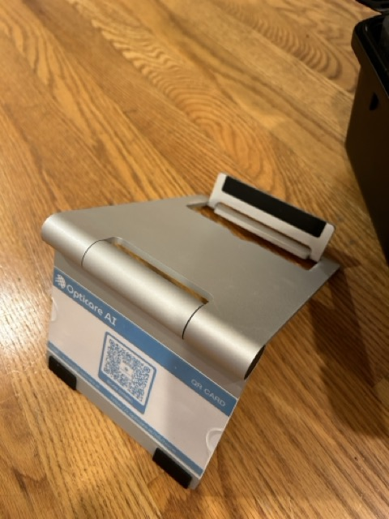
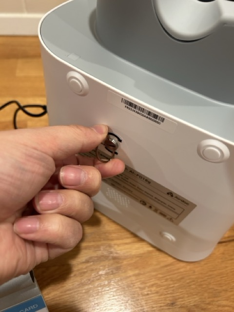

5 Step-by-Step Guide to Using the Opticare Camera
5.1 Introduction
The Opticare AI camera combines sophisticated technology with user-friendly operation to provide quick, non-invasive retinal imaging. This chapter provides comprehensive guidance for getting the most out of your device, from initial setup through routine operation and maintenance.
5.2 Device Overview
5.2.1 Physical Specifications
- Dimensions: 297mm × 253mm × 125mm
- Weight: 2 kg
- Minimum pupil diameter requirement: 2.8 mm
- Field angle: 40 degrees
- Camera resolution: 12 million pixels
5.2.2 Key Components
- Power indicator light
- Micro HDMI interface
- USB-B interface

5.3 Initial Setup
5.3.1 Equipment Requirements
- Stable table or cart
- Power outlet
- Reliable internet connection
- (Optional) Computer or tablet with Windows 10 or higher
- USB cable (provided)
- Power adapter (provided)
Follow these steps to get started:
- Unpack the Camera: Open the case, take out the camera and the stand.

- Set Up the Stand: Unfold the stand. Ensure the QR code is facing front. You can take out the QR code if you choose to not letting the users to scan themselves.

- Remove the key The camera is locked for transportation. Unlock by removing the screw key located at the bottom of the device.

You will need the key when you pack the camera for transportation, so put it in a place where you won’t lose it.
Power Connection: Connect the power adaptor and switch on the power located on the left side of the camera. The green indication led should be on.

Initialization: Wait for the camera to initialize and prompt you for the next steps.
The camera is pre-configured with your Wi-Fi network. You should hear the message: “Connected to the network,” confirming it is connected to your Wi-Fi. Please refer to the email for the Wi-Fi that the device is configured with.
Unlock the Camera: Press the larger white button on the right side of the camera three times quickly. This unlocks the camera. There is a lock key under the camera that needs to be unscrewed for unlocking.
5.3.2 Environment Optimization
- Room lighting: Moderate to dim
- Temperature: Maintain between 5°C - 40°C
- Humidity: Keep between 10% - 90%
- Avoid direct sunlight on equipment
- Ensure adequate ventilation
5.4 Daily Operation
5.4.1 Pre-Session Checklist
Power on sequence:
- Connect power adapter
- Toggle switch to ON position
- Wait for “Device is starting” voice prompt
- Listen for “Startup is completed” confirmation
Software preparation:
- Launch camera management software
- Log in to your account
- Verify connection status
- Check available storage space
Environmental check:
- Adjust room lighting
- Clear workspace
- Position chair for patient comfort
- Sanitize contact surfaces
5.4.2 Patient Preparation
- Initial Steps
- Create new patient record
- Enter required demographic information
- Select appropriate imaging mode
- Explain procedure to patient
- Positioning
- Adjust chair height
- Align patient’s eyes with position guide
- Ensure proper posture
- Verify comfortable positioning
5.4.3 Image Capture Process
- Basic Imaging Mode
- Select “New” in software interface
- Enter patient information
- Click “Submit” to initiate imaging
- Follow automated voice prompts
- During Capture
- Monitor preview screen
- Observe patient compliance
- Watch for quality indicators
- Respond to any system prompts
- Quality Control
- Review images immediately
- Check for clarity and focus
- Verify proper alignment
- Initiate retake if necessary
5.4.4 Advanced Features
- Shooting Modes
- Fundus mode (standard retinal imaging)
- Anterior segment mode
- Stereoscopic disk mode
- Image Enhancement
- Adjust display parameters
- Modify contrast settings
- Fine-tune color balance
- Apply image optimization
5.5 Troubleshooting Guide
5.5.1 Common Issues and Solutions
Power-Related Problems
Problem: Device won’t power on
- Check power adapter connection
- Verify outlet functionality
- Confirm power switch position
- Inspect cable for damage
Software Connection Issues
Problem: Software cannot detect camera
- Verify USB connection
- Restart software
- Check device driver status
- Ensure proper startup sequence
Image Quality Issues
Problem: Blurry or dark images
- Check room lighting
- Verify patient positioning
- Clean optical surfaces
- Confirm settings configuration
System Errors
Problem: Error messages during operation
- Document error code
- Follow on-screen prompts
- Restart system if necessary
- Contact support if persistent
5.6 Maintenance and Care
5.6.1 Daily Maintenance
- Clean contact surfaces
- Check cable connections
- Verify system operation
- Update patient records
5.6.2 Weekly Tasks
- Software updates check
- Comprehensive cleaning
- System performance review
- Backup data
5.6.3 Monthly Procedures
- Deep cleaning protocol
- System diagnostics
- Storage optimization
- Maintenance log update
5.6.4 Cleaning Procedures
- Optical Components
- Use only approved cleaning solutions
- Apply gentle, circular motions
- Use lint-free cloths
- Avoid excessive pressure
- External Surfaces
- Sanitize with approved disinfectant
- Clean display screens carefully
- Wipe down cables and connections
- Maintain hygienic conditions
5.7 Best Practices
5.7.1 Workflow Optimization
- Schedule regular maintenance windows
- Maintain organized patient records
- Establish consistent protocols
- Document all procedures
5.7.2 Quality Assurance
- Regular calibration checks
- Image quality monitoring
- Staff training updates
- Protocol compliance review
5.7.3 Safety Considerations
- Proper equipment handling
- Patient safety protocols
- Data security measures
- Emergency procedures
5.8 Advanced Operations
5.8.1 Data Management
- File Organization
- Create logical folder structures
- Implement naming conventions
- Maintain backup systems
- Archive older records
- Report Generation
- Select appropriate templates
- Include relevant metrics
- Add professional annotations
- Review for accuracy
5.8.2 System Integration
- Network Configuration
- Setup secure connections
- Configure sharing permissions
- Establish backup protocols
- Maintain security standards
- Software Updates
- Monitor for available updates
- Schedule installation windows
- Verify system compatibility
- Document changes
5.9 Emergency Procedures
5.9.1 Power Interruption
- Save current work
- Properly shut down system
- Protect equipment
- Resume operations safely
5.9.2 Data Recovery
- Access backup systems
- Verify data integrity
- Restore necessary files
- Document incident
5.10 Support Resources
5.10.1 Technical Support
- Contact information
- Hours of operation
- Priority levels
- Response expectations
5.10.2 Training Resources
- Online tutorials
- Reference materials
- Training videos
- User guides
5.11 Conclusion
Mastering the operation of the Opticare AI camera requires attention to detail and consistent practice. By following these guidelines and maintaining proper protocols, practitioners can ensure optimal performance and reliable results. Remember that technical support is always available to assist with any questions or concerns that arise during operation.
5.11.1 Key Takeaways
- Follow proper setup and maintenance procedures
- Maintain consistent operational protocols
- Monitor system performance regularly
- Document all procedures and issues
- Stay current with updates and training
- Prioritize patient comfort and safety
Regular review of these procedures and ongoing staff training will help ensure successful implementation and operation of your Opticare AI camera system. Keep this guide readily available for reference and update your protocols as needed based on experience and new recommendations.